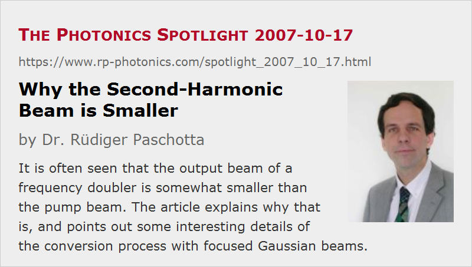

Why the Second-Harmonic Beam is Smaller
Posted on 2007-10-17 as a part of the Photonics Spotlight (available as e-mail newsletter!)
Permanent link: https://www.rp-photonics.com/spotlight_2007_10_17.html
Author: Dr. Rüdiger Paschotta, RP Photonics Consulting GmbH
Abstract: It is often seen that the output beam of a frequency doubler is somewhat smaller than the pump beam. The article explains why that is, and points out some interesting details of the conversion process with focused Gaussian beams.

Ref.: encyclopedia articles on frequency doubling and nonlinear polarization; G. D. Boyd and D. A. Kleinman, “Parametric interaction of focused Gaussian light beams”, J. Appl. Phys. 39 (8), 3597 (1968)
If you send a laser beam into a nonlinear crystal where frequency doubling (second-harmonic generation) occurs, you will often find the second-harmonic beam to have a smaller beam radius, compared to that of the pump beam. This is worth some thoughts.
For a large collimated beam, the mentioned effect can be easily understood by considering that the magnitude of nonlinear polarization caused by the pump beam is proportional to the square of the electric field. So if you have a Gaussian pump beam, the nonlinear polarization wave also has a Gaussian shape, but with a smaller radius. As that nonlinear polarization wave is the source of the second-harmonic beam, it is clear that the second-harmonic beam will come out smaller.
For a focused beam in the crystal (as is more common), the situation is somewhat more complicated, as the beam radius varies during propagation. It is essential then to also consider the phase properties. The nonlinear polarization must of course have phase fronts which coincide with those of the pump beam. Therefore, the same should hold for the wavefronts of the generated second-harmonic beam. This means that pump and second-harmonic beam should have the same focus position and also the same Rayleigh length. Given that the second-harmonic beam has half the wavelength, it should have half the effective mode area at the focus. This indeed fits well to the smaller extent of the nonlinear polarization wave.
It is clear that in a situation with spatial walk-off, as occurs for critical phase matching, the situation gets more complicated: the second-harmonic beam gets larger in one direction, and its wavefronts will subsequently deviate from those of the pump beam. However, even without spatial walk-off there is a problem with the Gouy phase shift. That deviation from the phase evolution of a plane wave occurs for both pump and second-harmonic beam, of course. Nevertheless, the effects of the Gouy phase on both beams do not exactly cancel each other. The nonlinear polarization goes with the square of the pump field, so it gets the Gouy phase shift twice, while the second-harmonic wave can have it only once. This means that for strong focusing the wavefronts do not match each other as nicely as one might expect from the above considerations. That mismatch has been recognized early on, and is discussed in detail in the famous paper of Boyd and Kleinman (see the reference above). It has a significant impact on the pump beam radius for optimum conversion efficiency. It turns out that this optimum indeed requires a slight phase mismatch, which can partly compensate the mismatch of Gouy phase shifts. This means that the optimum crystal temperature for tightly focused beams can somewhat differ from that for larger beams.
This article is a posting of the Photonics Spotlight, authored by Dr. Rüdiger Paschotta. You may link to this page and cite it, because its location is permanent. See also the RP Photonics Encyclopedia.
Note that you can also receive the articles in the form of a newsletter or with an RSS feed.
Questions and Comments from Users
Here you can submit questions and comments. As far as they get accepted by the author, they will appear above this paragraph together with the author’s answer. The author will decide on acceptance based on certain criteria. Essentially, the issue must be of sufficiently broad interest.
Please do not enter personal data here; we would otherwise delete it soon. (See also our privacy declaration.) If you wish to receive personal feedback or consultancy from the author, please contact him e.g. via e-mail.
By submitting the information, you give your consent to the potential publication of your inputs on our website according to our rules. (If you later retract your consent, we will delete those inputs.) As your inputs are first reviewed by the author, they may be published with some delay.
|  |
If you like this page, please share the link with your friends and colleagues, e.g. via social media:
These sharing buttons are implemented in a privacy-friendly way!